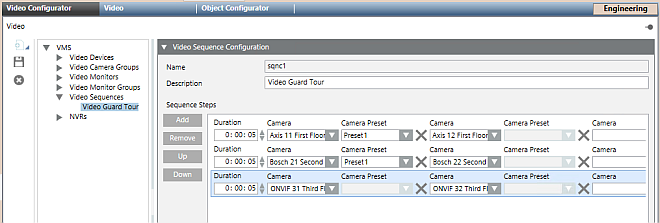
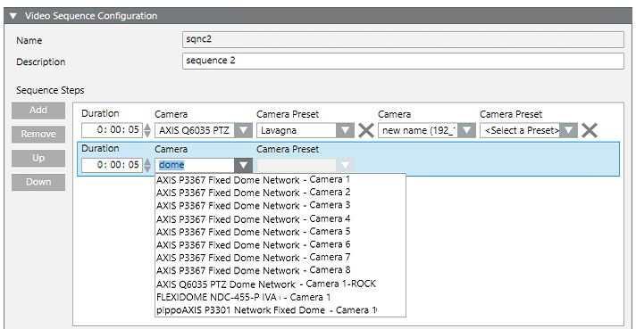

Configuring Video Sequences
It is possible to create time-based sequences that allow the operator to cycle through views from different cameras on the same monitor. This can be used to create visual guard tours, or for surveillance sites with a large number of cameras. You can create video sequences that occupy a single monitor, or multiple monitors.
Prerequisites
- Desigo CC is configured to support video surveillance. See Integrating Video Surveillance.
- System Manager is in Engineering mode.
- System Browser is in Application View.
NOTICE

Updating of objects in System Browser
The configurations described here are done in the Video Configurator tab:
- The changes will propagate to System Browser when the Video System is Connected. See Connecting the Video System.
- In case of video objects added, renamed or removed, a Sort command may also be needed, to correctly regroup objects in System Browser. See Grouping Video Objects.
View the Existing Video Sequences
- In System Browser, select Applications > Video.
- In the Video Configurator tab, expand the VMS > Video Sequences folder.
- Any video sequences already configured in the system display in the VMS tree.

Create a New Video Sequence
- In System Browser select Applications > Video.
- In the Video Configurator tab, select VMS > Video Sequences.
- Click New
 , and select Add a New Video Sequence.
, and select Add a New Video Sequence. - In the Video Sequences Configuration expander, enter a Description for the video sequence.
- Click Save
 .
.
- The new video sequence is created in the Video Sequences folder of the VMS tree and added under Applications > Video > Sequences in System Browser.
Configure the Steps in a Video Sequence
- In System Browser select Application > Video.
- In the Video Configurator tab, select VMS > Video Sequences > [sequence].
- The Video Sequence Configuration expander displays any steps already configured in the sequence. Each step corresponds to a row. When the sequence runs, it will cycle through the steps defined here.
- If required, click Add to create a new row. Or skip to the next instruction to modify an existing row.
- Configure each row as follows:
- Enter the Duration of the video sequence step. Note the format: h:mm:ss.
- From the drop-down list, select the Camera. To help find a camera, you can type a few characters of its name, to filter the list.
- Only for PTZ cameras, also enter the PTZ Camera Preset.
NOTE: For fixed cameras, this field is disabled. For PTZ cameras, you must enter a Preset, otherwise no video will display. - (Optional). If you want the sequence to occupy more than one monitor:
a. To the right of the X symbol, on the same row, complete another pair of Camera/Camera Preset fields.
b. Repeat the above step for as many monitors as you want to use.
c. You can click the X symbol to delete the camera entry left of the symbol. - When this video sequence step executes, the first camera in the row will display on the first monitor, the second camera in the row will display on the second monitor, and so on.
- Repeat steps 3 to 4 above to configure other video sequence steps.
- (Optional) Adjust the video sequence steps as follows:
- Select a step and click Up and Down to change the order of the steps.
- Select a step and click Remove to delete it. - Click Save .

Check how a Sequence Displays
- To preview the result, in System Browser select Applications > Video > Sequences > [sequence].
- Images from the newly-created video sequence populate one or more monitors of the video view, and cycle through the steps with the duration and order you configured. The monitors occupied by the video sequence are marked with an
 icon.
icon.
For more information see, Display a Video Sequence.
Delete a Sequence
Complete these steps to remove a sequence that is no longer needed. This will not delete any of the cameras used in the sequence.
- In System Browser select Application > Video.
- In the Video Configurator tab, select VMS > Video Sequences > [sequence].
- Click
 .
. - Click Yes to confirm.
- The sequence is removed from the Video Sequences folder of the VMS tree, and from Applications > Video > Sequences in System Browser.
Rename a Sequence
The name of a sequence is read-only. But you can edit its description as follows.
- In System Browser select Application > Video.
- In the Video Configurator tab, select VMS > Video Sequences > [sequence].
- In the Video Camera Group Configuration expander, edit the Description of the sequence.
- Click Save .
- The description of the sequence is updated in the VMS tree and in System Browser.